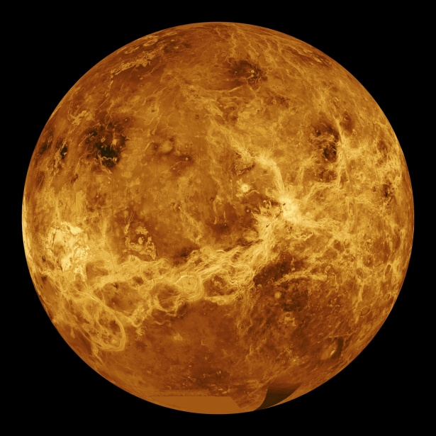

Venus

|  |
|
Solo tras el Sol y la Luna, Venus es el objeto más brillante que se puede ver en el firmamento desde la Tierra. Esto propició, ya desde la antigüedad, que por su brillo y belleza los romanos asociaran el planeta con la diosa de la belleza y el amor, Venus, de la cual recibe su nombre. Parte de la intensidad del brillo de Venus es debido a la cercanía con la Tierra, ya que se trata del planeta que más próximo se encuentra de nosotros. También es el segundo planeta más cercano al Sol. Se trata de otro de los 4 planetas rocosos del sistema solar y debido a la gran similitud tanto en tamaño como en densidad con nuestro planeta, en ocasiones es denominado como el planeta gemelo de la Tierra. Al igual que la Tierra, Venus posee un núcleo de hierro envuelto por un manto de roca caliente y una corteza rocosa. En cuanto a su superficie presenta un color oxidado y está salpicada de montañas y miles de grandes volcanes, algunos de los cuales los científicos creen que aún siguen activos. |